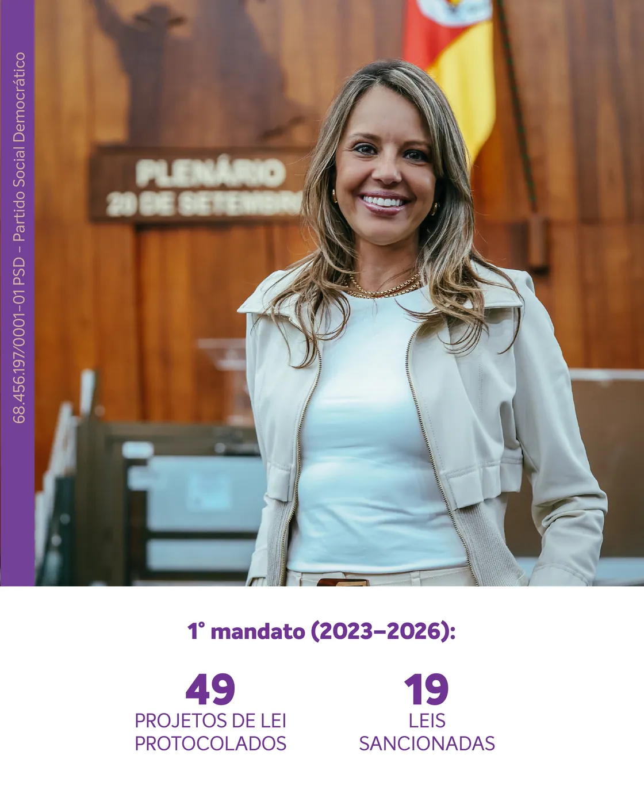
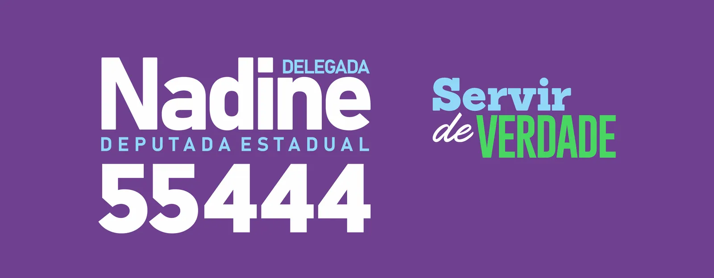
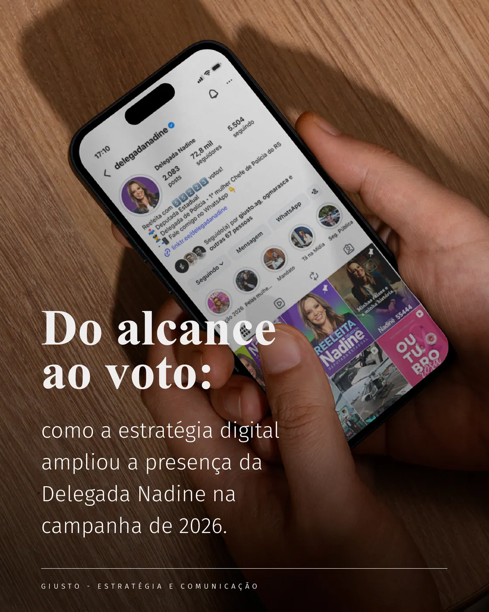
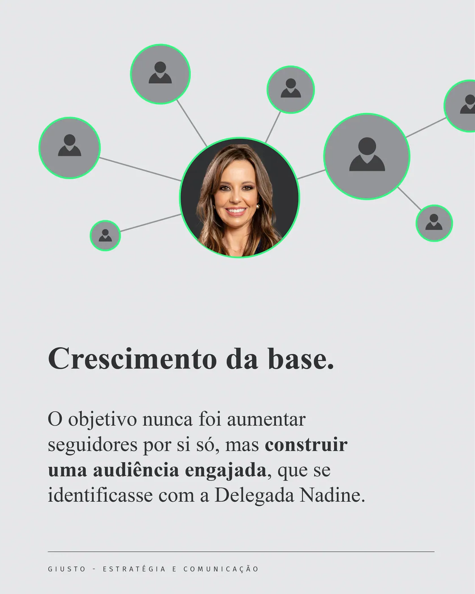
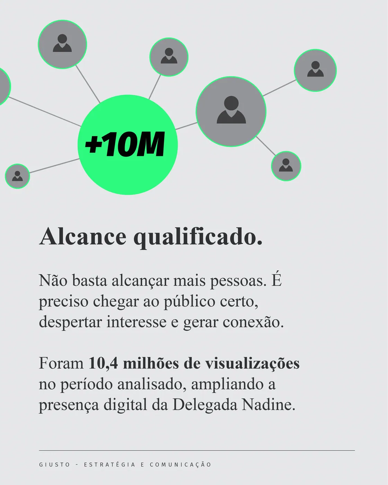
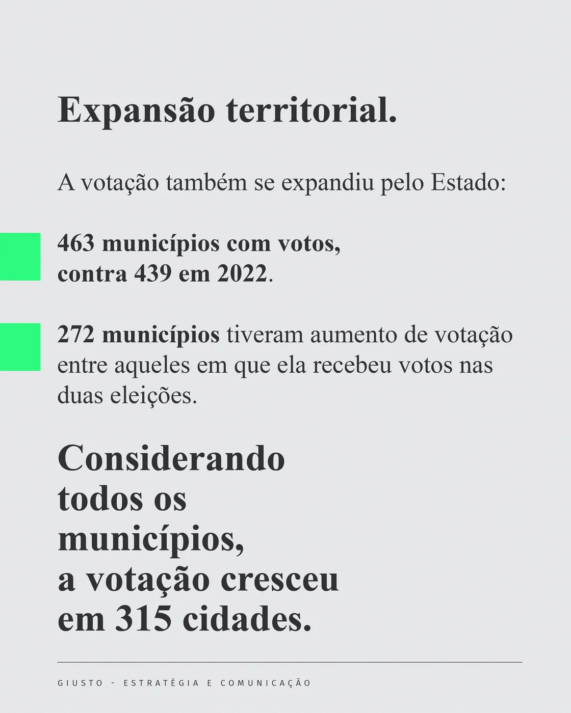
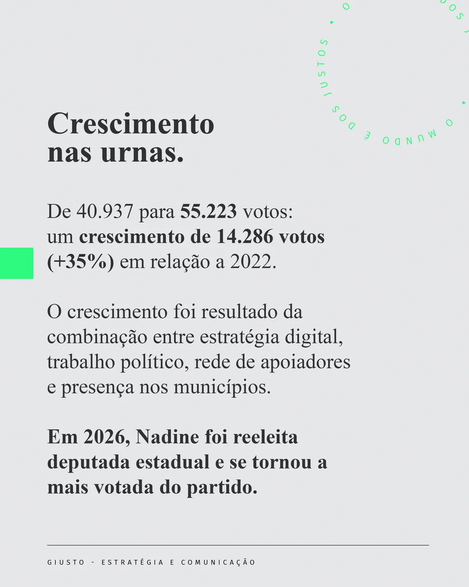
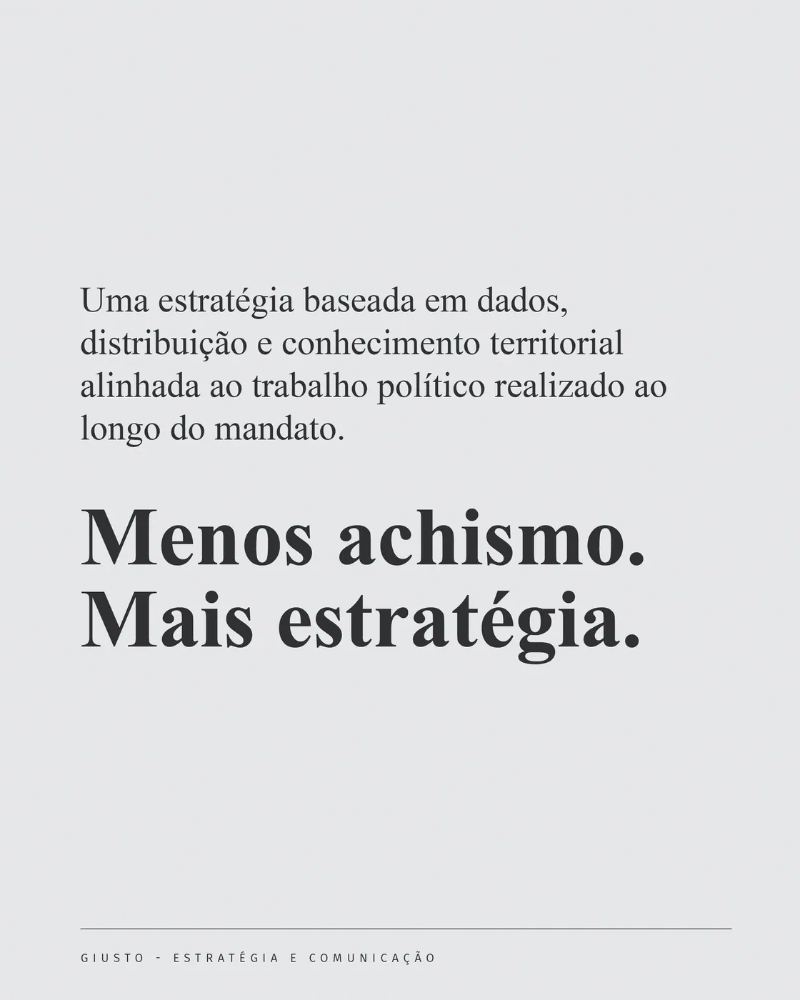

Delegada Nadine.
Na reeleição da Delegada Nadine, o objetivo nunca foi juntar seguidores. Foi construir uma audiência engajada, que se identificasse com ela e chegasse até a urna.
O desafio
Ampliar a presença de uma deputada já conhecida, falando com o público certo em todo o Rio Grande do Sul, e transformar alcance em voto.
A estratégia
Uma estratégia digital baseada em dados e território, com vídeos sobre trajetória, entregas do mandato e as bandeiras de segurança pública, proteção das mulheres e dos animais.
O que entregamos
Identidade visual com o slogan Servir de verdade, redes sociais, tráfego pago, roteiros, gravações em estúdio e externas, motion, GCs e jingle.

Trajetória, entregas e bandeiras
Gravações em estúdio e na rua, pensadas para cada etapa da campanha.

Dados guiando cada decisão
Votos em 463 municípios, contra 439 em 2022, e crescimento em 315 cidades.






Menos achismo. Mais estratégia.